Script per l'analisi e controllo di un pendolo inverso su carrello mobile
Pulizia dello spazio di lavoro
clear
close all
clc
Creazione delle variabili simboliche per le caratteristiche del sistema (variabili nel tempo e costanti)
syms x0(t) t1(t) m0 m1 J1 L1 g % Posizione del CoM del pendolo x1 = x0 + L1 / 2 * sin(t1); y1 = - L1 / 2 * cos(t1); % Posizione terminale del DPI xt = x1 + L1 / 2 * sin(t1); yt = y1 - L1 / 2 * cos(t1); % Calcolo delle velocità lineari v0 = diff(x0); vx1 = diff(x1); vy1 = diff(y1); % Calcolo delle velocità angolari w1 = diff(t1);
Calcolo del lagrangiano LGR = KE - PE e derivate parziali rispetto alle posizioni 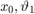 e alle velocità 
KE = .5 * (m0 * v0 ^ 2 ... + m1 * vx1 ^ 2 + m1 * vy1 ^ 2 ... + J1 * w1 ^ 2 ... ); PE = - m1 * g * y1; LGR = KE - PE
LGR(t) = (m1*(diff(x0(t), t) + (L1*cos(t1(t))*diff(t1(t), t))/2)^2)/2 + (J1*diff(t1(t), t)^2)/2 + (m0*diff(x0(t), t)^2)/2 + (L1^2*m1*sin(t1(t))^2*diff(t1(t), t)^2)/8 - (L1*g*m1*cos(t1(t)))/2
Rimpiazzo le accelerazioni degli stati con variabili simboliche (utile per semplificare l'espressione di queste ultime in termini delle altre variabili di stato)
syms a0 u1 u(t); ddQ = [a0, u1];
Calcolo delle forze agenti sul sistema
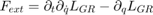
F = subs([ ... diff(diff(LGR, v0)) - diff(LGR, x0), ... diff(diff(LGR, w1)) - diff(LGR, t1), ... ], [diff(v0), diff(w1)], ddQ); F = simplify(F)
F(t) = [a0*m0 + a0*m1 - (L1*m1*sin(t1(t))*diff(t1(t), t)^2)/2 + (L1*m1*u1*cos(t1(t)))/2, J1*u1 + (L1^2*m1*u1)/4 + (L1*a0*m1*cos(t1(t)))/2 - (L1*g*m1*sin(t1(t)))/2]
Scelgo come forze esterne agenti sul sistema la forza (attuabile) sul carrello 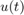 e le forze di disspazione che sono lineari nelle velocità 
sys = F == [u, 0]; sym(transpose(sys))
ans(t) =
a0*m0 + a0*m1 - (L1*m1*sin(t1(t))*diff(t1(t), t)^2)/2 + (L1*m1*u1*cos(t1(t)))/2 == u(t)
J1*u1 + (L1^2*m1*u1)/4 + (L1*a0*m1*cos(t1(t)))/2 - (L1*g*m1*sin(t1(t)))/2 == 0
Nota: il sistema è non lineare nelle variabili di stato 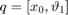, tantomeno nelle variabili estese 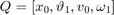
syms cartvel pendvel cartpos pendpos inforce; newStateVars = [cartvel, pendvel, cartpos, pendpos, inforce]; oldStateVars = [diff(x0(t), t), diff(t1(t), t), x0(t), t1(t), u(t)]; sysWR2acc = subs(solve(sys, ddQ), oldStateVars, newStateVars); sysWR2a0 = subs(sysWR2acc.a0, oldStateVars, newStateVars); sysWR2u1 = sysWR2acc.u1; matlabFunction(sysWR2a0, 'File', 'a0Funct'); matlabFunction(sysWR2u1, 'File', 'u1Funct');
Per linearizzare il sistema e sviluppare quindi uno schema di controllo per l'impianto, usiamo un'approssimazione di Taylor del primo ordine attorno ad un punto di lavoro 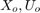 per cui 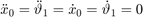 ( sono variabili di stato e ingresso del sistema del primo ordine: nel nostro caso 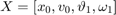, quindi al punto di lavoro 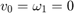 mentre 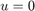, 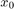 generica e 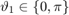)
sono variabili di stato e ingresso del sistema del primo ordine: nel nostro caso 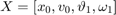, quindi al punto di lavoro 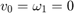 mentre 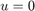, 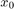 generica e 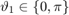)
oprState = zeros(1, 5); subs(sysWR2acc, newStateVars, oprState)
ans =
struct with fields:
a0: 0
u1: 0
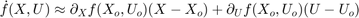
linearA = [ ... zeros(2, 2), eye(2); ... subs(jacobian([sysWR2a0, sysWR2u1], [cartpos, pendpos, cartvel, pendvel]), ... newStateVars, oprState) ... ] linearB = [ ... zeros(2, 1); subs(jacobian([sysWR2a0, sysWR2u1], [inforce]), ... newStateVars, oprState) ]
linearA =
[0, 0, 1, 0]
[0, 0, 0, 1]
[0, -(L1^2*g*m1^2)/(m0*m1*L1^2 + 4*J1*m0 + 4*J1*m1), 0, 0]
[0, (L1*m1*(2*g*m0 + 2*g*m1))/(m0*m1*L1^2 + 4*J1*m0 + 4*J1*m1), 0, 0]
linearB =
0
0
(2*m1*L1^2 + 8*J1)/(2*(m0*m1*L1^2 + 4*J1*m0 + 4*J1*m1))
-(2*L1*m1)/(m0*m1*L1^2 + 4*J1*m0 + 4*J1*m1)
Per le matrici 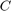 e 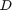 del sistema linearizzato scelgo 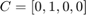, 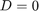 (osservo l'attuale angolo del pendolo che, in ultima battuta, sarà la misura da stabilizzare)
linearC = [0, 1, 0, 0]; linearD = 0;
Per le costanti del sistema scelgo le stesse presenti nel modello Simulink, quindi 
linearA = subs(linearA, [J1, m0, g], [1 / 3 * m1 * L1^2, .455, 9.8]); linearA = double(subs(linearA, [m1, L1], [.21, .61])) linearB = subs(linearB, [J1, m0, g], [1 / 3 * m1 * L1^2, .455, 9.8]); linearB = double(subs(linearB, [m1, L1], [.21, .61]))
linearA =
0 0 1.0000 0
0 0 0 1.0000
0 -1.5339 0 0
0 15.9259 0 0
linearB =
0
0
1.7391
-2.4437
Converto le matrici nella funzione di trasferimento dell'impianto linearizzato
[linearPnum, linearPden] = ss2tf(linearA, linearB, linearC, linearD) linearP = minreal(tf(linearPnum, linearPden))
linearPnum =
0 0 -2.4437 0 0
linearPden =
1.0000 0.0000 -15.9259 0 0
linearP =
-2.444
-------------------------
s^2 + 4.441e-16 s - 15.93
Continuous-time transfer function.
Passando ora allo studio della stabilità e, specificando di volere asservimento nullo per riferimenti costanti 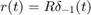 dovremmo soddisfarre la condizione
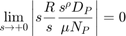
che complessivamente porta a scegliere 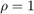, quindi un controllore con un polo all'origine
Scelgo quindi un controllore PID che renda il sistema a ciclo chiuso asintoticamente stabile con guadagno dell'integratore 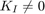
syms s KP KI KD; N = 100; Ctrl0num = KD * s ^ 2 + KP * s + KI; Ctrl0den = s * (s / N + 1); W0 = coeffs(expand(poly2sym(linearPnum, s) * Ctrl0num ... + poly2sym(linearPden, s) * Ctrl0den), s); tableW0 = myRouth(W0); vpa(tableW0, 3)
ans = [ -2.44*KI, - 2.44*KD - 0.159, 0.01] [ - 2.44*KP - 15.9, 1.0, 0] [ -(1.0*(2.44*KI + (2.44*KD + 0.159)*(2.44*KP + 15.9)))/(2.44*KP + 15.9), 0.01, 0] [-(1.0*(2.44*KP + 15.9)*(0.0244*KP - (1.0*(2.44*KI + (2.44*KD + 0.159)*(2.44*KP + 15.9)))/(2.44*KP + 15.9) + 0.159))/(2.44*KI + (2.44*KD + 0.159)*(2.44*KP + 15.9)), 0, 0] [ 0.01, 0, 0]
Dal criterio di Routh sappiamo che 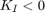: scelgo 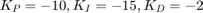 che soddisfano le condizioni di stabilità e danno origine ad un luogo delle radici favorevole alla realizzazione del controllore
candKP = 10; candKI = 15; candKD = 2; vpa(subs(tableW0, [KP, KI, KD], - 1 * [candKP, candKI, candKD]), 3) s = tf('s'); Ctrl0 = - (candKI / s + candKP + candKD * s / (s / N + 1)); % applico un guadagno di $5.35$ che porti i poli più veloci quando più % possibile verso il semipiano sinistro Loop0 = Ctrl0 * linearP; Wcls0 = drawEverythingButSignalResponse(Loop0); [numCtrl0, denCtrl0] = tfdata(Ctrl0); numCtrl0 = cell2mat(numCtrl0);denCtrl0 = cell2mat(denCtrl0);
ans = [ 36.7, 4.73, 0.01] [ 8.51, 1.0, 0] [0.422, 0.01, 0] [0.798, 0, 0] [ 0.01, 0, 0]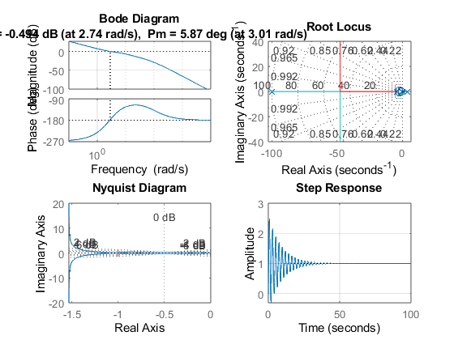
Per aumentare ancora di più il margine di fase ntroduco una rete anticipatrice con polo in 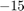 e zero in 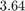
Ctrl1 = 5.36 * Ctrl0; Loop1 = Ctrl1 * linearP; Wcls1 = drawEverythingButSignalResponse(Loop1); [numCtrl1, denCtrl1] = tfdata(Ctrl1); numCtrl1 = cell2mat(numCtrl1);denCtrl1 = cell2mat(denCtrl1);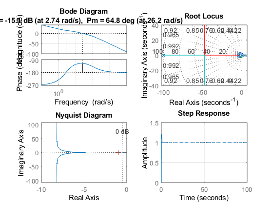
Ora il sistema a ciclo chiuso è asintoticamente stabile (vedi tabella di Routh), con funzione di trasferimento propria, sovraelongazione del 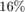 e tempo d'assestamento al 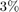 pari a 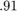 secondi: per migliorare ulteriormente le prestazioni inserisco un filtro al riferimento
tau = 10; CtrlRef = 1 / (s / tau + 1); WclsRef = CtrlRef * Wcls1; step(WclsRef) [numCtrlRef, denCtrlRef] = tfdata(CtrlRef); numCtrlRef = cell2mat(numCtrlRef); denCtrlRef = cell2mat(denCtrlRef); CtrlFinal = Ctrl1; numCtrlFinal = numCtrl1; denCtrlFinal = denCtrl1;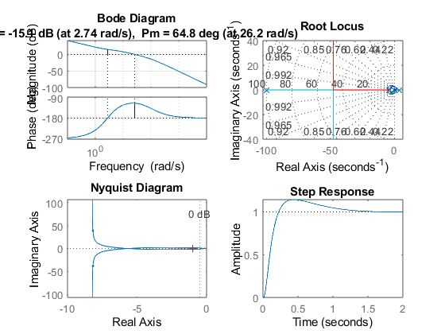
Tento, tramite un controllore in feed forward, di rimpiazzare poli stabili del sistema a ciclo chiuso con altri poli più veloci: innanzitutto calcolo i poli effettivi del sistema a ciclo chiuso
[temp, rootslinearP] = tfdata(linearP); rootslinearP = roots(cell2mat(rootslinearP)); Ffctrl = 1; for i = (1 : 1 : length(rootslinearP)) r = real(rootslinearP(i)); if(r > -10 && r < 0) Ffctrl = Ffctrl * (s / (rootslinearP(i)) - 1) / (s / 15 + 1); end end Ffctrl = minreal(Ffctrl); [numFfctrl, denFfctrl] = tfdata(Ffctrl); numFfctrl = cell2mat(numFfctrl); denFfctrl = cell2mat(denFfctrl);
Stampo a schermo la versione finale della funzione di trasferimento del sistema a ciclo chiuso, verifico stabilità di quest ultimo e grafico la risposta a scalino del sistema
WclsEverything = minreal((linearP* Ffctrl + linearP * CtrlFinal * CtrlRef) ...
/ (1 + linearP * CtrlFinal))
[temp, WclsEverythingden] = tfdata(WclsEverything);
vpa(myRouth(cell2mat(WclsEverythingden)), 3)
figure(1);
step(WclsEverything);
WclsEverything =
9.185 s^6 + 2.863e04 s^5 + 7.868e05 s^4 + 7.142e06 s^3 + 2.962e07 s^2
+ 5.9e07 s + 4.694e07
------------------------------------------------------------------------
s^8 + 133 s^7 + 6398 s^6 + 1.4e05 s^5 + 1.567e06 s^4 + 9.527e06 s^3
+ 3.238e07 s^2 + 5.93e07 s + 4.694e07
Continuous-time transfer function.
ans =
[ 1.0, 6400.0, 1.57e+6, 3.24e+7, 4.69e+7]
[ 133.0, 1.4e+5, 9.53e+6, 5.93e+7, 0]
[ 5350.0, 1.5e+6, 3.19e+7, 4.69e+7, 0]
[1.03e+5, 8.73e+6, 5.81e+7, 0, 0]
[1.04e+6, 2.89e+7, 4.69e+7, 0, 0]
[5.88e+6, 5.35e+7, 0, 0, 0]
[1.94e+7, 4.69e+7, 0, 0, 0]
[3.93e+7, 0, 0, 0, 0]
[4.69e+7, 0, 0, 0, 0]
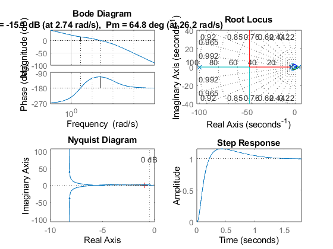 Infine avvio la simulazione dal modello Simulink
initAngle = pi / 2; noisePower = 1; delayVal = .01; load_system("myPendulum.slx"); open_system("myPendulum"); set_param('myPendulum', 'StopTime', '20'); sim('myPendulum');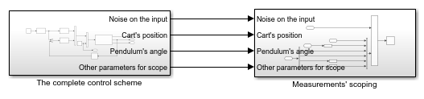